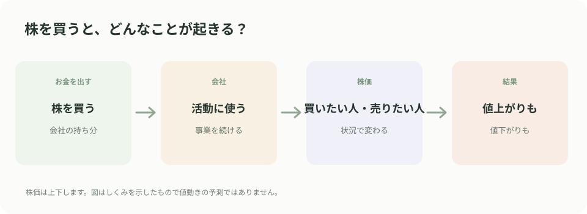

まず投資とは？
株ってなに？
投資は、お金を使って会社や社会の活動に参加し、将来その価値が変わる可能性を受け入れることです。お金が増えることもあれば、減ることもあります。

投資は「必ずもうかる方法」ではありません。しくみを知るだけでも大丈夫。今すぐ口座を作ったり、商品を買ったりする必要はありません。
「株」は会社の小さな持ち分
会社が新しいお店を出したり、商品を作ったりするにはお金が必要です。会社は資金を集めるため、会社の持ち分を小さく分けた「株式」を発行することがあります。その一部を買うと、その会社の株主の一人になります。
ただし、株を1つ持ったからといって、お店を自由に動かせたり、会社の利益を必ずもらえたりするわけではありません。株の値段は、会社の成績や世の中の状況、買いたい人と売りたい人の数などで変わります。
株の値段は上がることも、下がることもある
1株を1,000円で買ったあと、株価が700円になったら、売る時の値段は買った時より300円低くなっています。売れば損失が確定し、売らずに持っていても、その後さらに値下がりすることがあります。逆に値上がりする場合もありますが、どちらになるかは分かりません。
買った金額より受け取る金額が少なくなることを「元本割れ」といいます。会社が倒産した場合など、株の価値が大きく下がることもあります。投資では、出したお金が全部戻る保証はありません。
投資でお金が増えることがある仕組み
- 値上がり益：買った時より高い値段で売れた場合の差額。ただし、値下がりして損をすることもあります。
- 配当：会社が利益の一部を株主に分けること。会社が配当を出さない年もあり、金額も約束されません。
- 株主優待：会社が株主向けに商品やサービスを提供すること。すべての会社にあるわけではなく、内容が変わることもあります。
どれも必ず受け取れるものではありません。「毎月必ずもうかる」「絶対に損しない」と言う勧誘には注意してください。
投資信託は、みんなのお金をまとめた商品
投資信託は、多くの人から集めたお金をひとつにまとめ、決められた方針で株式や債券などに投資する商品です。たくさんの会社に分けて投資する商品もあります。ひとつの会社だけに投資するよりも投資先を分けられる場合がありますが、値下がりや元本割れは起こりえます。運用や管理の費用もかかります。
貯金と投資は、役割がちがう
| くらべる点 | 貯金 | 投資 |
|---|---|---|
| 主な役割 | 近いうちに使うお金を置いておく | 将来に向けてお金を運用する |
| 金額の変化 | 預金の種類に応じた利息がつく | 値上がり・値下がりがある |
| 注意すること | 預金の条件や保護の範囲を確認 | 元本割れや手数料の可能性 |
どちらが良いという話ではなく、使う時期や目的に合わせて使い分けます。生活費やすぐ必要になるお金は、値動きのある商品に回さないことが大切です。
NISAは「商品」ではなく「税金のルール」
NISAは、決められた条件の範囲で投資の利益が非課税になる制度です。株や投資信託そのものの名前ではありません。NISAを使っても商品の値下がりは防げず、損失が出ることもあります。制度や年齢の条件は変わることがあるため、利用を考える時は金融庁の最新情報を確認してください。
金融庁「NISAを知る」 ↗初めての人は、この順番で考えよう
- 投資に使うお金と、生活に必要なお金を分ける
- 株や投資信託の値段が下がることを理解する
- 分からない言葉や費用を公式資料で調べる
- 納得できない時は、買わずに学び続ける